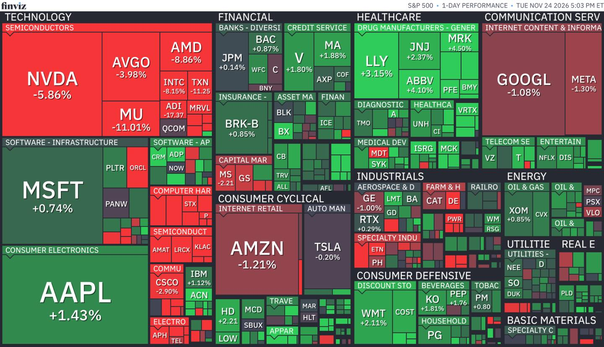

2026年11月25日 星期三（晨間更新）
⚠️ 美股11/24（二）慶祝行情僅維持一日：費半8,832.50（-7.88%＝回吐前日近半反彈）／納指-1.48%／標普-0.50%＝AI獲利了結二次殺跌｜道指50,018.70（+0.85%＝+423點＝Amgen/Nike/Salesforce帶動＝重上五萬整數關）＝漲跌互見｜NVDA 155.38（-5.86%＝盤中一度跌超7%）／美光-11.01%／AMD-8.86%＝殺盤重心｜Anthropic 81.91（-6.5%）＝正式跌穿83美元IPO價＝AI新股定價去泡沫進入新階段｜VIX 26.36（-0.98%）＝連續第二日回落＝殺跌屬獲利了結而非恐慌重燃｜恒指22,219.65（-0.85%）＝七連跌＝22,000關直接攻防｜HIBOR全曲線上移（銀行公會11/24 fixing五期全新：隔夜2.74厘／12個月4.03268厘）＝鎖息議價支撐再增強｜關稅2.0（301條款多層壁壘重建）與12月加息＝雙重壓制｜12/15-16 FOMC倒數三週＝鎖息執行週
📊 市場決議
慶祝行情一日遊＝獲利了結二次殺跌：黃仁勳回任利多無法對沖估值與關稅壓力；道指逆市重上五萬＝市內輪動而非全面撤退。美股11/24（二）收市：道指50,018.70（+0.85%＝+423點＝重上50,000）／標普7,201.09（-0.50%）／納指23,733.54（-1.48%）／費半8,832.50（-7.88%＝前日+14.02%反彈單日回吐近半）＝科技與非科技漲跌互見（王董：殺盤重心集中半導體）。NVDA 155.38（-5.86%＝盤中一度跌超7%）＝慶祝行情僅一個交易日；Anthropic 81.91（-6.5%）＝掛牌第四日正式跌穿83美元IPO價＝AI定價去泡沫新階段。VIX 26.36（-0.98%）＝連續第二日回落＝恐慌續退潮。
🎯 今日定調
「熊市反彈進入反覆段：單日反轉不等於趨勢反轉——恐慌峰值已過（VIX續回落）但估值消化與政策壓制未除；鎖息執行週不變」：①費半-7.88%回吐近半＝芯片掛鉤三前提推進逆轉為停滯：費半重企11,000門檻由差距15%擴大至22%②Anthropic跌穿IPO價83＝AI新股一級市場底線失守＝新上市AI避開邏輯強化、龍頭優先輪動加速③恒指22,219.65七連跌＝22,000關今日直接攻防；收復23,000並企穩方重啟港股掛鉤評估④關稅2.0（301條款重建＋或與7月10%-12.5%關稅疊加）＝多層次壁壘＝企業成本三重壓（進口+毛利+資金）⑤12月加息一碼機率約95%（王董引述利率期貨定價；實時源仍缺、沿用11/18結算95.835隱含約4.165厘）＝「今日鎖、明日更貴」＝鎖息執行倒數三週⑥HIBOR全曲線上移＝港元定存議價支撐再增強＝高息短窗先到先得。
⚖️ 風險天平
獲利了結二次殺跌與恐慌退潮並存：不利：費半-7.88%＝反彈單日回吐近半、NVDA/AMD/美光齊殺、Anthropic跌穿IPO價＝AI去泡沫加速、恒指七連跌22,000關攻防、關稅2.0多層壁壘（中國稅面最廣）、12月加息一碼機率約95%、黃仁勳12/3國會作證＋司法部與SEC調查持續｜緩和：VIX 26.36連續第二日回落＝殺跌屬獲利了結非恐慌重燃、道指+423點重上五萬＝非科技輪動承接、美債全線微跌＝股跌債升避險常態回歸、HIBOR全曲線上移＝港元定存議價支撐增強、北京延長關鍵礦物出口禁令暫停＝貿易休戰測試訊號——防守主軸：備案最高級維持（VIX穿25方降級）＋鎖息執行週＋反覆段不加大風險敞口。
💹 市場定價
道指50,018.70（+0.85%＝重上五萬）｜標普7,201.09（-0.50%）｜納指綜合23,733.54（-1.48%）｜費半8,832.50（-7.88%＝回吐近半反彈）
布蘭特88.50（-0.97%）｜期金3,555.10（-2.64%＝反彈一日回吐近半）｜10年4.904%（-0.014厘＝單日微跌＝避險回補重現）＋2年4.775%（2年期期貨11/23最新結算、與11/20持平）
美元103.84（-0.46%）｜日圓159.23（日圓轉弱0.19%）｜BTC約59,973（跌穿60,000）｜VIX 26.36（-0.98%）
📝 一句話
「慶祝行情一日遊＝AI獲利了結二次殺跌：恐慌峰值已過但反彈進入反覆段；Anthropic跌穿IPO價＝去泡沫新階段；鎖息照執行、港股22,000關攻防」
🔴 費半8,832.50（-7.88%）＝慶祝行情一日遊、回吐前日近半反彈＝芯片掛鉤三前提推進逆轉為停滯：費半9,588.05→8,832.50＝前日+1,180點反彈單日回吐-756點（近半）＝AI獲利了結殺盤重心；NVDA 155.38（-5.86%＝盤中一度跌超7%）／美光629.79（-11.01%）／AMD 413.27（-8.86%）＝板塊齊殺；費半重企11,000門檻由差距15%擴大至22%＝「重企11,000」前提推進逆轉；12/3黃仁勳國會作證＋司法部與SEC就Megaspeed轉運調查持續＋新法遵長任命＝「調查明朗」同樣未達（王董）——芯片掛鉤維持「條件停滯」：敞口只減不加；12/3作證＋費半重企11,000雙確認方再議；年期短封頂、緩衝25% OTM以上紀律不變。
🔴 恒指22,219.65（-0.85%）＝七連跌＝22,000關今日直接攻防：11/19收22,841.62→11/20收22,410.80→11/23收22,383.74→11/24收22,219.65（-0.85%）＝七連跌＝22,000整數關面前最後一道防線；匯豐130.60（+0.77%＝港股七連跌中逆市微升、與140防線距離7.4%）、中銀香港46.06（+0.35%）齊逆市＝本地金融權重初現抗跌訊號、惟權重股整體（騰訊-0.70%／阿里-1.02%／小米-3.71%／中海油-1.97%）仍全面受壓——港股掛鉤全面暫緩深化維持：重啟條件＝收復23,000並企穩＋匯豐重上140；22,000關攻防結果為今日本地市場主觀察點；不搶反彈、不接下跌刀。
🟡 Anthropic 81.91（-6.5%）＝掛牌第四日正式跌穿83美元IPO價＝AI新股去泡沫新階段：11/19開盤111.50→11/20收88.91→11/23收87.84→11/24收81.91＝較開盤價回落26.5%、較IPO價83低1.3%＝一級市場底線正式失守（Bloomberg）；IPO含私募合共集資逾1,000億美元＝供給壓力＋獲利盤出逃疊加——AI主題配置邏輯強化：龍頭（有盈利與治理確定性）優先於新上市AI（估值與供給壓力）；新上市AI掛鉤避開維持；主題基金（U45816）選股框架（賣鏟人＋現金牛＋有定價權）在去泡沫環境下優勢強化。
🟡 12月加息一碼機率約95%（王董引述利率期貨定價；實時源仍缺、沿用11/18結算95.835＝隱含約4.165厘）＋HIBOR全曲線上移＝鎖息執行週倒數三週：王董引述利率期貨定價（11/25晨）：12月加息一碼機率高達95%、兩碼約5%＝方向與基底全定價一致＝壓倒性定價維持；11/24 AI殺跌日油價僅微跌＝通脹壓力未見緩解＝政策無轉向空間；銀行公會11/24 11:15 fixing（五期全新）：隔夜2.74厘（較金管局11/23日結2.51厘升0.23厘＝短端連續第三日上升）、1個月2.81566厘、3個月3.38863厘、6個月3.54643厘、12個月4.03268厘＝中長端較11/6全面上移（+0.23至+0.24厘）＝整條曲線上移＋向上斜——12/15-16 FOMC前＝鎖息最後執行週（倒數三週）：美元短存鎖息趕在議息前完成；港元定存議價支撐再增強＝儲定賞4厘短窗先到先得。
🟡 VIX 26.36（-0.98%）＝連續第二日回落＝殺跌屬獲利了結、備案降級觸發在即：19.30（上週低位）→22.91→25.46→24.69→28.44→35.89→26.62→26.36＝費半-7.88%殺跌日VIX不升反跌＝恐慌未重燃、屬獲利了結性質（關鍵確認訊號）；惟26.36仍高於20正常區約32%＝距25降級線僅1.36點＝觸發在即——高波動備案最高級維持：新掛鉤暫停報價、年期與緩衝不再妥協、槓桿與複雜結構零參與；VIX回落穿25方降一級（觸發在即）、回穿20下方方正常化。
恒生指數
22,219.65
▼ -0.85%（11/24收；七連跌＝22,000關攻防）
道瓊斯
50,018.70
▲ +0.85%（11/24收；+423點＝重上五萬）
S&P 500
7,201.09
▼ -0.50%（11/24收）
納斯達克
23,733.54
▼ -1.48%（11/24收）
費城半導體
8,832.50
▼ -7.88%（11/24收＝回吐近半反彈）
布蘭特原油
88.50
▼ -0.97%（11/24結算；AI殺跌日相對抗跌）
黃金（期金）
$3,555.10
▼ -2.64%（11/24結算；反彈一日回吐近半）
美10年債息
4.904%
▼ 微跌0.014厘（11/24；股跌債升＝避險回補重現）
美2年債息
4.775%
▬ 持平（2年期期貨11/23最新結算、與11/20持平）
美元指數
103.84
▼ -0.46%（11/24；104關下回落）
📡 晨間更新（11/25 06:40-06:55 HKT核實）——美股＝11/24（二）收市（Yahoo日線bar核實自算：道指+0.85%＝重上五萬、標普-0.50%、納指綜合-1.48%、費半-7.88%；VIX 26.36、-0.98%）｜個股11/24收市bar核實：NVDA 155.38（-5.86%）、AMD 413.27（-8.86%）、美光629.79（-11.01%）、Anthropic 81.91（-6.5%、Bloomberg收市快照＝正式跌穿83美元IPO價）｜恒指22,219.65＝11/24收（-0.85%＝七連跌；個股11/24日線bar核實：匯豐130.60（+0.77%）／騰訊341.60／阿里82.20／小米26.50（-3.71%）／中海油20.86／中銀香港46.06）｜布蘭特88.50（-0.97%）／金3,555.10（-2.64%、主力合約11/24結算）｜美元103.84（-0.46%）｜實測曲線：2年4.775%（2年期期貨11/23最新結算、與11/20持平）、5年4.712%（11/24、-0.016厘）、10年4.904%（11/24、-0.014厘）、30年5.292%（11/24、-0.002厘）＝全線微跌＝股跌債升＝避險回補常態回歸｜EFFR 3.88%（NY Fed 11/17最新、連續多日持平；官方API今日暫缺、水平沿用）｜12月聯邦基金期貨＝實時源持續暫缺、沿用11/18結算95.835＝隱含約4.165厘；王董引述利率期貨定價（11/25晨）：12月加息一碼機率約95%、兩碼約5%｜即時：BTC約59,973（跌穿60,000）｜日圓159.23（日圓轉弱0.19%）｜HIBOR＝銀行公會11/24 11:15 fixing（五期全新：隔夜2.74厘／1個月2.81566厘／3個月3.38863厘／6個月3.54643厘／12個月4.03268厘＝短端連續第三日上升、中長端全面上移）｜王董大盤籌碼＝已融入（11/25 06:30 post＝美股週二recap）＋附Finviz heatmap（11/24）
📊 聯儲局利率路徑定價（焦點：12月加息壓倒性定價——期貨沿用11/18結算95.835＝隱含約4.165厘；王董引述利率期貨定價：一碼機率約95%＝12/15-16 FOMC倒數三週＝鎖息執行週）
減息維持不變加息
現行利率3.75%-4.00%（EFFR 3.88%、NY Fed 11/17最新、連續多日持平；官方API今日暫缺）；12月聯邦基金期貨＝實時源持續暫缺、沿用11/18結算95.835＝隱含約4.165厘；王董引述利率期貨定價（11/25晨）：加息一碼機率高達95%、兩碼約5%＝方向與基底一致＝壓倒性定價＝12/15-16 FOMC加息為壓倒性基準情境
實測曲線：2年4.775%（期貨11/23結算、與11/20持平）、5年4.712%（11/24、-0.016厘）、10年4.904%（11/24、-0.014厘）、30年5.292%（11/24、-0.002厘）。全線微跌＝股跌債升＝避險回補常態回歸：前日「避險回吐」單日現象結束；11/24 AI殺跌日油價僅微跌＋期貨定價一碼機率約95%＝通脹壓力未緩解＝短端政策路徑不變，長端回落屬避險資金回補。

Finviz S&P 500 板塊熱力圖（11/24）
🗣 最新市況解讀（晨間更新 · 美股＝11/24（二）收市獲利了結二次殺跌、港股＝11/24收22,219.65（-0.85%＝七連跌）；金/油＝11/24結算 · Bloomberg最新批次（11/25晨間：301條款關稅2.0（中國/EU＋十餘經濟體）＋北京延長關鍵礦物禁令暫停＝休戰關鍵測試＋陳吉寧被查＋Anthropic跌穿83 IPO價＋黃仁勳all-hands道歉與「每日治療」言論＋McCormick警告slippery slope＋Reddit用戶NVDA call獲利1,984%）已融入 · 王董大盤籌碼（11/25 06:30）＋Finviz heatmap已融入）
【Macro】全球大盤與宏觀環境
- 慶祝行情一日遊＝獲利了結二次殺跌（實測）：費半8,832.50（-7.88%＝前日+1,180點反彈單日回吐-756點近半）／納指23,733.54（-1.48%）／標普7,201.09（-0.50%）＝AI獲利了結壓力重現；道指50,018.70（+0.85%＝+423點＝重上五萬整數關）＝漲跌互見；VIX 26.36（-0.98%）＝連續第二日回落＝殺跌日VIX不升反跌＝恐慌未重燃、屬獲利了結性質——「單日反轉不等於趨勢反轉：熊市反彈進入反覆段」＝恐慌峰值已過、估值消化與政策壓制未除（王董反覆段框架）。
- 關稅2.0＝301條款多層次壁壘重建（Bloomberg＋王董引WSJ）：美國準備對中國、EU與十餘個經濟體加徵新關稅（最快週二公布）＝最高法院2月裁定IEEPA關稅越權後、以301條款重建2025年關稅體系；中國產品稅面預期最廣、越南與印度或面對更高稅率；鋼鋁與汽車等已有國安關稅產品或不納入；或與7月已宣布的10%-12.5%強迫勞動關稅疊加＝多層次關稅壁壘而非單純恢復舊制；企業同時面對進口成本＋毛利率＋資金成本三重壓；北京延長對美關鍵礦物出口禁令暫停＝貿易休戰的關鍵測試（Bloomberg）——關稅2.0與12月加息並存＝「滯脹式」政策組合風險：企業利潤率與資金成本同時受壓＝盈利預期下修壓力未除。
- 債市＝股跌債升、避險回補常態回歸（實測）：10年4.904%（-0.014厘）／5年4.712%（-0.016厘）／30年5.292%（-0.002厘）＝全線微跌＝前日「避險回吐」單日現象結束＝股債負相關回歸＝殺跌日的避險行為正常化；2年4.775%（期貨11/23結算、與11/20持平）＝短端不變＝政策路徑定價未動；美元103.84（-0.46%）＝殺跌日美元回落＝非恐慌形態——殺跌＋避險回補＋美元回落＋VIX回落＝「獲利了結」四訊號組合；若轉為「恐慌」形態（股債齊跌＋美元急升＋VIX跳升）方需升級備案。
- 中國政治＝陳吉寧被查（Bloomberg/Xinhua）：政治局委員兼上海市委書記陳吉寧因涉嫌違紀違法受查＝2022年任命的政治局委員中第四人被查＝數十年來最大規模領導層整肅的擴大；上海作為金融與開放門戶＝政策連續性觀察點；對港股與中資板塊屬尾部風險變數（非即時定價因素）。
- 港股＝七連跌、22,000關直接攻防：恒指22,219.65（-0.85%）＝美股前日大反彈無帶動、昨日美股殺跌照跟跌＝本地資金面主導格局未變；匯豐130.60（+0.77%）與中銀香港46.06（+0.35%）逆市微升＝本地金融權重初現抗跌訊號——22,000關攻防為今日本地市場主觀察點：收復23,000並企穩＋匯豐重上140＝雙確認方重啟港股掛鉤評估；全球反彈或殺跌均不構成港股重啟條件。
【Sector】關鍵板塊輪動
- 半導體二次殺跌＝殺盤重心（實測＋王董）：費半-7.88%＝回吐前日近半反彈；NVDA 155.38（-5.86%＝盤中一度跌超7%＝慶祝行情僅一個交易日）／美光629.79（-11.01%）／AMD 413.27（-8.86%）＝殺盤重心；惟外資長線論點仍在：有分析維持NVDA 2028年EPS約25美元預估＝按現價前瞻本益比不足10倍＝估值與情緒的張力（王董引述）——長線價值論與短期去槓桿現實並存＝兩邊都寫：估值支撐屬中期邏輯、改變不了短期獲利了結節奏——芯片掛鉤「條件停滯」：費半重企11,000門檻由差距15%擴大至22%＝推進逆轉；12/3作證＋重企11,000雙確認方再議。
- 調查與合規線持續推進（王董獨有＋Bloomberg）：司法部與SEC仍在調查NVDA是否經黑名單新加坡企業Megaspeed非法轉運芯片＝董事會任命新法遵長＝合規線實質動作；黃仁勳all-hands大會向員工道歉＝稱每日接受治療、並向董事會保證無國安威脅（Bloomberg）；國會程序週倒數：12/1眾院閉門詢問→12/2法務長出席→12/3參議院銀行委員會公開作證；共和黨參議員McCormick警告總統施壓復職開「slippery slope」先例（Bloomberg）＝政治干預企業治理的體制風險未除。
- AI新股去泡沫＝一級市場底線失守：Anthropic 81.91（-6.5%）＝掛牌第四日正式跌穿83美元IPO價（Bloomberg）＝11/19上市日開盤111.50以來回落26.5%＝供給壓力（IPO含私募集資逾1,000億美元）＋獲利盤出逃疊加；惟部分外資仍看好其長期AI基建浪潮定位（王董引述）＝定價去泡沫與長期敘事並存——短線定價由「稀缺溢價」轉「供給壓力」主導——新上市AI掛鉤避開維持；AI內部輪動（棄新上市、留龍頭）在跌市中同樣成立＝龍頭相對抗跌屬配置指引。
- 道指成分股輪動＝非科技承接（王董）：Amgen、Nike、Salesforce帶動道指+423點重上五萬＝殺跌日資金轉向非科技防禦/價值＝市內輪動而非全面撤退；熱力圖可見醫療與必需消費相對抗跌（Finviz 11/24）——市寬收縮但未崩壞：道指新高等關鍵位＋VIX回落＝殺跌屬輪動性質；科技倉位與非科技倉位的相對強弱為後市市寬觀察點。
- 瑞銀分化框架＝AI板塊內部拉開差距（王董獨有）：近期劇烈波動不代表AI長期結構性成長破壞（雲端業務增長＋AI使用量提升＋算力需求持續）＝未來個股分化將更明顯：有明確獲利模式＋健全資產負債表的企業 vs 高度依賴舉債融資／有限算力資源／投機性成長預期的企業＝兩類標的拉開差距——配置映射：主題基金（U45816）選股框架（賣鏟人＋現金牛＋有定價權）＝分化環境下的篩選優勢；高槓桿投機型AI標的＝避開清單。
【Company】關鍵個股與事件
- NVDA＝慶祝行情一日遊：155.38（-5.86%＝盤中一度跌超7%）＝黃仁勳回任利多單日消化完畢＝獲利了結壓倒估值支撐；12/3國會作證＋司法部/SEC調查＋新法遵長＝治理與合規兩線未收束；外資長線論點（2028年EPS約25美元＝前瞻PE不足10倍）與短期去槓桿並存（王董引述）——敞口只減不加維持：12/3作證為下個節點；反覆段不作個股掛鉤動作。
- Anthropic＝跌穿IPO價的標本意義：81.91（-6.5%）＝掛牌四日97.17→88.91→87.84→81.91＝一級市場底線正式失守＝AI IPO定價去泡沫加速（Bloomberg）；11/19開盤111.50＝開盤價回落26.5%＝供給壓力與獲利盤的消化仍未完成——新上市AI掛鉤避開；後續觀察：若跌穿80關＝去泡沫第二段；AI主題配置以龍頭優先。
- 匯豐＝港股七連跌中的逆市訊號：130.60（+0.77%）＝殺跌環境下逆市微升＝本地金融權重抗跌初現（中銀香港46.06＋0.35%同步）；惟與140防線距離仍達7.4%＝修復路徑長——單日逆市僅記錄、不行動：重上140＋恒指收復23,000＝雙確認重置條件不變。
- 小米＝殺跌擴大：26.50（-3.71%）＝港股權重股中跌幅最大＝動能轉弱確認；費半-7.88%殺跌傳導直接——相關掛鉤暫緩維持；待費半殺跌消化與恒指喘定方再評。
- 投機情緒樣本（Bloomberg）：Reddit用戶上週五買入NVDA call、黃仁勳復職後獲利1,984%＝散戶槓桿投機情緒未死＝反彈日暴利故事的雙面性：情緒回補動能與追高風險並存——不作跟隨依據；高波動備案下槓桿結構零參與紀律不變。
【Sentiment】市場情緒
- VIX 26.36（-0.98%）＝殺跌日不升反跌＝獲利了結性質確認：35.89→26.62→26.36＝連續第二日回落＝費半-7.88%殺跌日恐慌未重燃＝「獲利了結」而非「恐慌重燃」的關鍵確認；惟仍高於20正常區＝波動未正常化、距25降級線僅1.36點＝觸發在即——高波動備案最高級維持：新掛鉤暫停報價、槓桿與複雜結構零參與；VIX回落穿25＝備案降一級、回穿20下方＝正常化。
- 情緒結構＝「恐慌退潮確認、反彈信任未重建」：殺跌日VIX回落＋美債避險回補＋美元回落＝獲利了結三訊號；惟AI去泡沫（Anthropic跌穿IPO）＋關稅2.0＋12月加息＝反彈缺乏政策與基本面後盾（王董：救市降息期待落空＝熊市反彈無貨幣政策護航）——反覆段定位：備案最高級維持；反彈確認（費半重企11,000＋恒指收復23,000）前風險敞口只減不加。
- 前瞻日程＝短週三節點：感恩節短週（美股週四11/26休市）＝流動性變薄＝波動放大可能；12/3黃仁勳國會作證＝調查線公開化節點；12/15-16 FOMC＝加息落地＝鎖息窗口倒數三週——短週內鎖息與泊位動作優先；每日按實價重評＝紀律與情緒脫鉤。
【Micro 金價】
- 路徑（主力合約實測）：3,515.40（11/20結算）→3,651.40（11/23結算、+3.87%）→3,555.10（11/24結算、-2.64%＝反彈一日回吐近半＝+136美元後回吐-96美元）；3,515單日低點仍未失守＝二次探底觀察位；3,600得而復失＝「阻力轉回支持」確認失敗。
- 驅動：AI獲利了結殺跌日＝金價同步回吐＝前日「股金齊漲」形態未延續＝流動性邏輯仍在（跌市中黃金未能提供避險對沖＝實質利率4.9厘級數的持有成本壓制避險溢價）；油-0.97%相對抗跌＝商品內部分化持續。
- 技術面：3,515為二次探底觀察位（失守方重啟下探風險）；3,600復收＋企穩方重議反彈確認；單日反彈不構成趨勢證據。
- 操作：金相關配置＝「反彈確認前不加大」維持；3,600復收＋3,700確認方重評；多元商品配置（U43980）邏輯獨立於單一黃金＝能源與農產品輪動＋33%現金國債避險機制。
📌 總結
- 定調——「熊市反彈反覆段：單日反轉不等於趨勢反轉」：費半-7.88%回吐近半＋Anthropic跌穿IPO價＝AI去泡沫與獲利了結主導；殺跌日VIX回落26.36＋美債避險回補＋美元回落＝獲利了結性質確認＝恐慌峰值已過、反彈信任未重建——備案最高級維持（VIX穿25方降級、距1.36點）；反彈確認前風險敞口只減不加。
- 息口——12月加息壓倒性定價（一碼機率約95%、王董引述；實時源仍缺、沿用95.835＝隱含約4.165厘）＝鎖息執行週倒數三週：HIBOR全曲線上移（11/24 fixing五期全新）＝「今日鎖、明日更貴」：美元短存趕在12/15-16 FOMC前完成；港元定存議價支撐再增強＝儲定賞4厘短窗先到先得。
- 長端——10年4.904%（-0.014厘）＝股跌債升避險回補重現：前日「避險回吐」單日現象結束＝長債基金（U45838）維持觀察：單日微跌不構成連續性、回落持續方重開累積窗口；Callable Linear 5厘對10年現貨息差擴至約0.10厘＝鎖長息對照優勢微擴。
- 港股與金——22,000關攻防 vs 3,515二次探底觀察：恒指22,219.65七連跌＝本地資金面主導：22,000關攻防為今日主觀察點，收復23,000並企穩＋匯豐重上140方重啟；金3,555.10＝3,515未失守＝二次探底觀察、3,600復收方重議。
- RM部署：鎖息→美元1-3個月短存＋HSBC超短債（U45242）＝議息前執行＋安聯浮動息（U45707）＝加息受惠鏈（一碼機率約95%下確定性最高）；長端→法巴環球債券（U45838）＝10年4.904%單日微跌＝觀察維持、連續性未確認；收息泊位→PIMCO收益II（U50021、約5.95%）＋宏利多元入息（U45660、約10.08%）＝收息防守核心；防禦位→施羅德靈活配置總回報（U45871、約6%月派）＝反覆段核心防禦（極端市況可轉持現金）；港股高息→恒生高息股30（U45624、7.52%）＝七連跌22,000攻防中暫緩；商品→施羅德AS商品（U43980）＝金回吐油抗跌＝內部輪動邏輯不變；日圓159.23／BTC約59,973結構避開。
- 今日前瞻：港股22,000關直接攻防＋感恩節短週（美股週四11/26休市）流動性變薄＝波動放大可能＋12/3黃仁勳國會作證倒數＋關稅2.0細節或最快今日公布＝盤前風險事件。
ℹ️ 來源：Bloomberg（11/25晨間Morning Briefing Asia：美國準備對中國/EU等經濟體加徵301條款新關稅＋中國產品稅面最廣＋北京延長關鍵礦物出口禁令暫停＝休戰關鍵測試＋陳吉寧被查＝政治局委員第四人＋Anthropic跌穿83 IPO價＋黃仁勳all-hands道歉（每日治療、無國安威脅保證）＋McCormick警告slippery slope＋Reddit用戶NVDA call獲利1,984%）＋王董大盤籌碼（11/25 06:30 post＝美股週二recap：慶祝行情僅一日／費半-7.8%殺盤重心／司法部與SEC調查持續＋新法遵長任命／NVDA 2028年EPS約25美元＝前瞻PE不足10倍的外資長線論點／Amgen、Nike、Salesforce帶動道指重上五萬＝輪動框架／瑞銀分化框架（獲利模式＋資產負債表 vs 舉債投機）／12月加息一碼機率約95%利率期貨定價引述／301條款關稅2.0與7月關稅疊加（引WSJ））＋Finviz S&P 500板塊熱力圖（11/24、王董post附圖）＋Yahoo Finance實測（11/25 06:40-06:55 HKT：美股11/24收市bar核實自算（道指+0.85%、標普-0.50%、納指綜合-1.48%、費半-7.88%、VIX 26.36 -0.98%）；NVDA 155.38（-5.86%）、AMD 413.27（-8.86%）、美光629.79（-11.01%）；恒指22,219.65＝11/24收（-0.85%＝七連跌；個股11/24日線bar核實：匯豐130.60、騰訊341.60、阿里82.20、小米26.50、中海油20.86、中銀香港46.06）；布蘭特88.50（-0.97%）／金3,555.10（-2.64%、主力合約）＝11/24結算；美元103.84（-0.46%）；BTC約59,973＝即時；日圓159.23）＋美債實測曲線（5年4.712%、10年4.904%、30年5.292%＝11/24 ^FVX/^TNX/^TYX實測；2年4.775%＝2年期期貨11/23最新結算、與11/20持平）＋12月聯邦基金期貨＝實時源持續暫缺（Yahoo合約代碼除牌、CME接口無數據）、沿用11/18結算95.835＝隱含約4.165厘；一碼機率約95%＝王董引述利率期貨定價（未經實測源核實、方向與基底一致）＋NY Fed EFFR 3.88%（11/17最新；官方API今日暫缺、水平沿用）＋香港銀行公會HIBOR（11/24 11:15 fixing五期全新：隔夜2.74000厘、1個月2.81566厘、3個月3.38863厘、6個月3.54643厘、12個月4.03268厘＝www.hkab.org.hk實測）＋香港金融管理局日結數據（11/23：隔夜2.51厘、1個月2.77089厘＝比較基準）。
🏦 (1) 息口專區：港元利率環境與CD／TT MXI／Callable Linear／基金部署
聯儲局路徑（加息軌道、截至11/25晨間）：9/16加息0.25厘至3.75-4.00厘（2023年來首次）；10/28暫停不動、兩名委員投反對票、均主張應再加息；12月加息壓倒性定價：期貨實時源持續暫缺＝沿用11/18結算95.835＝隱含約4.165厘；王董引述利率期貨定價（11/25晨）：加息一碼機率高達95%、兩碼約5%＝方向與基底一致＝壓倒性定價；聯儲局9月官方預測（SEP，即聯儲局官方預測）：2027年利率中位數4.1厘＝路徑仍向上；下次會議12/15-16＝加息為壓倒性基準情境＝鎖息執行週倒數三週。
美債息（11/24實測）：2年期4.775厘（2年期期貨11/23最新結算、與11/20持平）／5年期4.712厘（-0.016厘）／10年期4.904厘（-0.014厘）／30年期5.292厘（-0.002厘）＝全線微跌＝股跌債升＝避險回補常態回歸：殺跌日資金回流國債＝前日「避險回吐」單日現象結束；單日微跌不構成連續性＝長債基金（U45838）觀察維持、回落持續方重開累積窗口。
港銀拆息HIBOR（銀行之間借貸的息率，定存價格跟它走）：銀行公會11/24 11:15 fixing＝五期全新實測：隔夜2.74000厘（較金管局11/23日結2.51厘升0.23厘＝短端連續第三日上升）、1個月2.81566厘（+0.045厘）、3個月3.38863厘（較11/6升0.239厘）、6個月3.54643厘（+0.242厘）、12個月4.03268厘（+0.233厘）＝整條曲線上移＋「愈長期愈高」向上斜＝資金面中期收緊定價＝港元定存議價支撐再增強＝高息短窗（儲定賞4厘）先到先得；同時美息升＝港美息差擴大＝美元存款息口優勢增加（兌換風險如實提示）。
港元實際回報一覽（最新可得）：大行3/6個月定存2.40厘、渣打12個月3.30厘、全場12個月上限3.55厘、恒生儲定賞4厘（2個月新資金）、港元貨幣基金MMF 2.28-2.81厘、活期儲蓄近乎零息（0.01厘）；外匯基金票據EFB（政府背書短債）91日2.82厘／364日3.34厘；全港存款20.64萬億（按年+7.7%）但貸存比僅70.3%（每100元存款只有約70元借出）＝大量資金仍在等出路。
| 產品 | 息口邏輯（通俗講法） | 現況／行動 |
|---|
| CD／定存 執行週 | 12月期貨隱含約4.165厘＋一碼機率約95%（王董引述利率期貨定價）＝加息定價壓倒性＝「遲些才鎖會否蝕息」成立且急迫＝息趨升方向無懸念；下站12/15-16 FOMC＝鎖息最後執行週（倒數三週）；若12月加息0.25-0.50厘＝今日鎖定價將顯著落後＝「今日鎖、明日更貴」；反覆段市況下鎖息的確定性價值更突出＝議價空間維持打開；HIBOR全曲線上移＝港元定存議價支撐再增強、高息口（儲定賞4厘）先到先得 | 美元短存鎖息＝議息前優先執行；大額鎖6-12個月（3.3-4.0厘區間、爭取上限）；分開1/2/3年期錯開到期＝每年都有一筆到期、可重新議定；務必趕在12/15-16 FOMC前完成；港元短存先取儲定賞4厘／大行高息口 |
| TT MXI（匯率掛鉤存款） | 掛港元兌美元、兩段式方向判斷；引伸匯率（IER，產品隱含的掛鉤價）達7.85或以上＝貼近聯匯弱方保證區、不好碰；最新錨點：兩周期、觸發價7.8353、年化約4%（10/27）；美元103.84（-0.46%）＝匯率波動溫和＝結構環境平穩 | 照錨監察、不預測匯價方向 |
| Callable Linear（可贖回定息票據） 定息鎖長 | 5年期、首年不可贖回（NC1，即發行方起碼一年內不可提早收回）＝年化定息5厘；今日對照＝10年期美債4.904厘（11/24、-0.014厘）＝5厘定息高過10年期現貨約0.10厘（息差微擴）、30年期5.292厘＝「5年期的錢拎到20-30年期級數的息」維持＝10年現貨仍無5厘、5年定息5厘成稀缺鎖定；定息不隨息口走低下跌＝「今日鎖5厘、將來存款息跌都照收5厘」＝加息軌道見頂後的鎖長息工具；NC1首年保護＝起碼鎖足1年；一年後發行方可贖回＝客戶面對再投資風險（好息不會長久＝更要留意時機）；適合驚長債價格波動但想鎖長息的穩健收息客（長端息率若隨避險回補續跌＝今日5厘鎖定愈顯珍貴＝轉積極時點逼近） | 鎖長息替代腿＝5厘定息高過10年現貨約0.10厘＝對照優勢微擴、密切留意轉積極時點；與定存錯開配搭（短存鎖流動性＋Callable Linear鎖5年）；發行商信用、5年期流動性（提前贖回有損）如實提示 |
| 港元貨幣基金（MMF）／現金泊位 | 加息軌道＝泊位息率跟拆息上移；HIBOR全曲線上移（1個月2.81566厘）＝MMF收益率直接受支撐；低風險、隨時可贖回＝反覆段市況下流動性價值最大化 | 2.28-2.81厘＝先泊貨幣基金收息；U45193＝流動性首選 |
| 基金（息口受惠鏈） | 浮息債U45707：派息隨市場息率浮動、12月加息壓倒性定價（一碼機率約95%）＝加息落地即直接受惠、確定性最高；超短債U45242：年期極短、利率風險低＝彈性版定存；收息基金U50021：月派約5.95%；長債U45838：10年4.904%單日微跌＝避險回補重現＝觀察維持、連續性未確認 | 部署次序＝貨幣基金泊位→CD鎖6-12個月→浮息＋收息配置；12/15-16 FOMC前完成鎖息動作 |
💡 息口判決（通俗版）：美元方面，12月加息壓倒性定價（一碼機率約95%）＝息趨升方向無懸念＝「今日鎖、明日更貴」執行週＝美元短存議息前優先執行、並趁議價空間打開爭取更高價、務必趕在12/15-16 FOMC前完成；港元方面，HIBOR整條曲線上移＝定存議價支撐再增強＝毋須搶長鎖、先取儲定賞4厘等高息短窗；港美息差擴大＝同一筆資金、美元定存的息口優勢增加（匯率兌換風險如實提示）；10年4.904%單日微跌＝長債基金觀察維持＝不急；Callable Linear 5厘＝高過10年現貨（4.904厘）約0.10厘、與30年（5.292厘）僅差0.29厘＝「5年期的錢拎到20-30年期級數的息」維持＝長端息率若隨避險回補續跌、今日5厘鎖定愈顯珍貴＝穩健收息客密切留意轉積極時點。
📊 (2) 基金表格（21隻，RM銷售直接用）
| 基金 | 代號 | 分類 | 特性/派息 |
|---|
| HSBC貨幣 | U45193 | 現金 | 流動性極高，現金管理首選；反覆段市況＝泊位流動性價值最大化 |
| HSBC超短債 重點 | U45242 | 極短債 | 低利率風險；12月加息壓倒性定價（一碼機率約95%、隱含約4.165厘）＝美元短存鎖息執行週＝「今日鎖、明日更貴」 |
| 安聯浮動息 重點 | U45707 | 浮息債 | 息率隨市場調整；12月加息壓倒性定價——加息軌道上浮息債直接受惠＝息口受惠鏈首位、確定性最高 |
| PIMCO收益II 重點 | U50021 | 核心收息 | 月派息約5.95%；利率重定價期收息防守核心 |
| 法巴環球債券 觀察 | U45838 | 核心收息 | 環球投資級債；10年4.904%（11/24、-0.014厘）＝單日微跌＝股跌債升避險回補重現＝觀察維持：回落連續性未確認、持續方重開累積窗口 |
| 法巴新興債 | U45817 | 核心收息 | 新興市場高息債；美元103.84（-0.46%）回落＝匯率壓力暫緩、惟12月加息壓倒性定價下美元方向未定＝資金面與匯率雙壓的評估維持；北京延長關鍵礦物禁令暫停＝中美休戰訊號＝新興市場尾部風險略降 |
| 東方匯理收益機遇 | U45769 | 多元資產 | A2美元月派息，年率化約8.2% |
| 宏利多元入息10%派 重點 | U45660 | 多元資產 | 年化派息約10.08%，收息客首選 |
| 普徠仕多元收益 | U45679 | 多元資產 | 多元收益來源，分散風險 |
| PIMCO收益增長 | U45553 | 多元資產 | 收益＋增長並重 |
| 恒生亞洲增長收益 | U45090 | 多元資產 | 聚焦亞洲，月派息約5.73%；恒指22,219.65（11/24收、-0.85%）＝七連跌＝22,000關攻防中暫緩、收復23,000企穩方重啟評估 |
| 施羅德靈活配置總回報 防禦位 | U45871 | 多元資產 | 月派約6%；無基準限制靈活股債現金配置（Cash+3%絕對回報導向），極端市況可大幅轉持現金——VIX 26.36仍未正常化＋反彈進入反覆段＝防禦配置價值維持＝核心防禦 |
| 施羅德環球股債增長收息 | U45883 | 多元資產 | 月派約7.68%；環球股票32.8%＋環球債33.5%＋可換股債31.8%，存續期僅1.7年——短存續期在「更高更久」環境下優勢持續 |
| 恒生高息股30 ETF 暫緩 | U45624 | 股票主題 | 派息率約7.52%；恒指22,219.65（11/24收、-0.85%）＝七連跌、匯豐130.60逆市微升但距140遠＝收復23,000並企穩前暫緩、不搶反彈 |
| 貝萊德系統分析高息股 | U44950 | 股票主題 | 派息率約8-10%＋期權增強；反覆段市況＝系統化選股流程面對波動考驗＝防守性取決於量化篩選對基本面轉弱的過濾速度 |
| 鄧普頓亞太入息 | U45722 | 股票主題 | 亞太區入息策略；區內貿易口徑待觀察＝關稅2.0（越南印度或面對更高稅率）落地後按結果重評＝變數未除 |
| 法巴科技創新 重點 | U45816 | 股票主題 | 科技創新主題；費半-7.88%二次殺跌＋Anthropic跌穿IPO價＝AI去泡沫反覆段；瑞銀分化框架＝有明確獲利模式與健全資產負債表的龍頭 vs 舉債投機型拉開差距＝「賣鏟人＋現金牛＋有定價權」選股框架（王董引述框架映射）在分化環境下優勢強化；12/3黃仁勳國會作證＝主題波動節點 |
| 摩根亞洲股票高息 重點 | U45501 | 股票主題 | 月派約8.08%；重倉台/韓/中科技龍頭＋沽亞洲指數Call期權增強收益——VIX 26.36＝期權金收入策略於高波動環境的收益來源活躍；惟費半二次殺跌傳導亞洲科技＝重倉市場短期淨值承壓＝反覆段按注碼紀律分注 |
| 富達可持續發展環球股息優勢 新研究 | U45565 | 股票主題 | 環球優質藍籌純股收息＋ESG篩選＝過濾「帳面高息但基本面脆弱」的價值陷阱；月派約9.45%（G類可從資本或總收益派息）——適合要每月現金流＋管治防守性的穩健至平衡型股票客；人民幣客戶另有對沖月派類（約9.47%） |
| 施羅德亞洲高息股債 | U44377 | 多元資產 | 亞洲高息股債雙效合一、經理人動態調配股債比例（波動時債券護航、向好時高息股帶動）；月派金額可變；支援跨境理財通WMC——港股七連跌＝波動時債券護航機制為主要緩衝；適合鍾情亞洲、攻守兼備的穩健收息客；人民幣客戶另有對沖月派類 |
| 施羅德AS商品基金 新研究 | U43980 | 商品/另類 | 累積型不派息；主動多元商品配置（能源39.3%/農產品27.5%/金屬23.0%）＋Active Roll克服展期轉月成本；最高可持33%現金國債避險（2008、2020實證）；零槓桿純長倉；與環球債券相關性-0.07——金-2.64%回吐／油-0.97%抗跌＝商品內部分化＝能源與農產品輪動主導回報而非單一黃金；33%現金國債避險機制為反覆段緩衝；2026 YTD +30.9%（1年+41.1%）大幅跑贏MSCI環球；PI專屬、風險評級4-5＝適合憂慮股債齊跌及地緣通脹、想在股債外開獨立賺錢路的高淨值客 |
💡 RM切入：今日主題「慶祝行情一日遊＝AI獲利了結二次殺跌：恐慌峰值已過但反彈進入反覆段；Anthropic跌穿IPO價＝去泡沫新階段；鎖息照執行」→第一句講「反覆市況唯一確定性仍在利率：12月加息壓倒性定價（一碼機率約95%）＝『今日鎖、明日更貴』＝鎖息要快、價要爭、務必趕在12/15-16 FOMC前」；鎖息→「美元短存＋HSBC超短債（U45242）議息前執行＋安聯浮動息（U45707）加息直接受惠；HIBOR整條曲線上移＝先取儲定賞4厘短窗」；長端→10年4.904%單日微跌＝法巴環球債券（U45838）觀察維持、回落連續性未確認；防禦→「施羅德靈活配置（U45871、約6%月派）極端市況可轉持現金＝反覆段核心防禦」；收息→PIMCO收益II（U50021、5.95%）與宏利多元入息（U45660、10.08%）＝現金流核心；長息替代→「Callable Linear（5Y NC1）年化5厘＝高過10年現貨（4.904厘）約0.10厘＝『5年期的錢拎到20-30年期級數的息』維持＝長端息率若續跌、今日鎖定愈顯珍貴＝穩健收息客先短存、後CL」；港股→「恒指七連跌22,000關攻防＝恆生高息股30（U45624）收復企穩前暫緩、不搶反彈」。
🎯 (3) ELN 表格
| 標的 | 邏輯 | 接貨機會 |
|---|
| 恒生指數ELN 暫緩深化 | 恒指22,219.65（11/24收、-0.85%）＝七連跌＝22,000關直接攻防＝本地資金面主導＝掛鉤全面暫緩深化；收復23,000並企穩方重啟掛鉤評估；VIX 26.36高波動＝備案最高級、新掛鉤暫停報價 | 極低（七連跌＝暫緩深化、待收復23,000並企穩方再議） |
| 黃金ETF（2840.HK） 回吐觀察 | 期金3,555.10（11/24結算、-2.64%）＝反彈一日回吐近半＝3,600得而復失＝「阻力轉回支持」確認失敗；3,515單日低點仍未失守＝二次探底觀察位；2840.HK 2,602（11/23收、+1.4%；11/24日線bar未出）＝ETF數據滯後 | 觀察（3,515未失守＝觀察；3,600復收＋企穩方重議） |
| 費半／晶片相關 條件停滯 | 費半8,832.50（-7.88%）＝回吐前日近半反彈＝重企11,000門檻由差距15%擴大至22%＝芯片掛鉤三前提推進逆轉為停滯（接班定案✓＋調查明朗未達12/3＋重企11,000更遠）；NVDA 155.38（-5.86%＝慶祝行情僅一日）＝殺盤重心；12/3作證＋重企11,000雙確認方再議；年期短封頂、緩衝25% OTM以上紀律不變 | 極低（12/3作證＋費半重企11,000方再議） |
| 中國海洋石油（0883.HK） 續弱 | 20.86（11/24收、-1.97%＝七連跌）＝油價88.50續弱下油股續殺＝21.5-22.5帶區下緣下方續弱＝觀察轉弱；商品需求定價與股市風險偏好脫鉤＝油價85關為下一觀察位 | 低（待油價85關喘定與帶區同步確認） |
| 匯豐（0005.HK） 逆市微升 | 130.60（11/24收、+0.77%）＝港股七連跌中逆市微升＝本地金融權重抗跌訊號初現（中銀香港46.06＋0.35%同步）；惟與140防線距離仍達7.4%＝修復路徑長；重上140＋恒指收復23,000＝雙確認重置 | 低（單日逆市僅記錄、140連續守穩方回升） |
| 小米（1810.HK） 動能轉弱 | 26.50（11/24收、-3.71%＝權重股最大跌幅）＝殺跌擴大＝動能轉弱確認；費半-7.88%傳導直接＝相關性回歸（前日脫鉤論修正） | 低 |
⚠️ VIX 26.36＝高波動備案最高級：新掛鉤暫停報價、年期與緩衝不再妥協；槓桿與複雜結構零參與；VIX回落穿25方降一級（距1.36點＝觸發在即）、回穿20下方方正常化；芯片掛鉤條件停滯（12/3作證＋費半重企11,000雙確認方再議）；黃金掛鉤＝3,515未失守＝二次探底觀察、3,600復收＋企穩方重議；恒指掛鉤＝七連跌＝全面暫緩深化、收復23,000並企穩前不重啟；油掛鉤兩邊均不追（需求定價脫鉤）；匯豐單日逆市僅記錄；AI去泡沫＝高估值新上市AI掛鉤避開；恐慌退潮初段新掛鉤仍暫停報價＝待VIX穿25方重開報價
💴 (4) MXI / 定存建議
美元定存：3個月期約 4.2-4.4厘，6個月期約 4.0-4.2厘（12月加息壓倒性定價＝「今日鎖、明日更貴」執行週＝鎖息優先執行、務必趕在12/15-16 FOMC前完成；反覆段市況下鎖息確定性價值突出＝爭取區間上限）
港元定存：3個月期約 3.7-3.9厘（HIBOR整條曲線上移＝議價支撐再增強、高息短窗如儲定賞4厘先到先得；港美息差擴大＝美元定存息口優勢增加、兌換風險如實提示）
MXI結構性存款：掛鉤指數為主，潛在年化回報 5-7%（VIX 26.36＝高波動備案最高級、新掛鉤暫停報價；黃金掛鉤＝3,515未失守＝二次探底觀察、3,600復收方重議；指數掛鉤＝七連跌＝全面暫緩；芯片掛鉤條件停滯（12/3作證＋費半11,000雙確認方再議）；反覆段新掛鉤仍暫停報價＝待VIX穿25）
💡 建議：12月壓倒性定價（一碼機率約95%）＋VIX 26.36未正常化＝現金／短存泊位優先級最高（鎖息價值確定性最高、美元短存議息前執行）；長端——10年4.904%單日微跌＝法巴環球債券（U45838）觀察維持；Callable Linear 5厘高過10年現貨約0.10厘＝「5年期的錢拎到20-30年期級數的息」維持＝長息替代腿密切留意轉積極時點；黃金掛鉤3,515二次探底觀察；港股——恒指七連跌＝掛鉤全面暫緩深化、收復23,000並企穩方重議；中海油20.86帶區下緣下方續弱＝能源板塊轉弱觀察；金融與新上市AI相關標的暫避；今日關鍵：港股22,000關攻防＋感恩節短週（美股週四11/26休市）＋關稅2.0細節或最快今日公布＋12/3黃仁勳國會作證＋12/15-16 FOMC（加息壓倒性基準情境）＝鎖息窗口倒數三週。
🔍 今日關注 Watchlist
費半8,832.50（-7.88%）＝慶祝行情一日遊、回吐前日近半反彈：芯片掛鉤三前提推進逆轉為停滯（重企11,000門檻差距擴至22%）＝敞口只減不加、12/3作證＋重企11,000雙確認方再議｜
Anthropic 81.91（-6.5%）＝掛牌第四日正式跌穿83美元IPO價（Bloomberg）：一級市場底線失守＝AI去泡沫新階段；較上市日開盤111.50回落26.5%；新上市AI掛鉤避開、龍頭優先輪動｜
VIX 26.36（-0.98%）＝殺跌日不升反跌＝獲利了結性質確認：連續第二日回落＝恐慌未重燃；距25降級線僅1.36點＝備案降級觸發在即；新掛鉤仍暫停報價、槓桿與複雜結構零參與｜
恒指22,219.65（-0.85%）＝七連跌＝22,000關今日直接攻防：本地資金面主導；收復23,000並企穩＋匯豐重上140方重啟港股掛鉤與高息配置評估；匯豐130.60（+0.77%）逆市微升僅記錄｜
12月加息壓倒性定價（一碼機率約95%、王董引述利率期貨定價；實時源仍缺、沿用95.835＝隱含約4.165厘）：12/15-16 FOMC前＝美元短存鎖息執行週倒數三週；反彈無貨幣政策後盾＝鎖息確定性價值凸顯｜
HIBOR整條曲線上移（銀行公會11/24 fixing五期全新：隔夜2.74厘／1個月2.81566厘／12個月4.03268厘）＝短端連續第三日上升＋中長端全面上移：港元定存議價支撐再增強＝儲定賞4厘短窗先到先得｜
10年4.904%（-0.014厘）＝股跌債升避險回補重現：前日「避險回吐」單日現象結束＝殺跌屬獲利了結的債市確認；長債基金（U45838）觀察維持、回落連續性未確認；Callable Linear 5厘息差微擴｜
關稅2.0（301條款多層壁壘：中國稅面最廣＋越南印度更高＋或與7月10%-12.5%關稅疊加）：北京延長關鍵礦物禁令暫停＝休戰關鍵測試；企業進口成本＋毛利率＋資金成本三重壓＝盈利預期下修壓力｜
金3,555.10（-2.64%）＝反彈一日回吐近半：3,600得而復失＝「阻力轉回支持」確認失敗；3,515單日低點未失守＝二次探底觀察位；金相關配置「反彈確認前不加大」維持｜
黃仁勳治理與調查雙線（Bloomberg＋王董）：all-hands道歉＋「每日治療」言論＋司法部/SEC調查持續＋新法遵長＋12/1眾院閉門→12/3參院公開作證＝國會程序週倒數；McCormick警告slippery slope＝政治干預企業治理的先例風險｜
11/24美股收市：NVDA 155.38（-5.86%）、AMD 413.27（-8.86%）、美光629.79（-11.01%）、ANT 81.91（-6.5%、Bloomberg快照＝跌穿IPO價83）｜道指50,018.70（+0.85%＝重上五萬）、標普7,201.09（-0.50%）、納指綜合23,733.54（-1.48%）、費半8,832.50（-7.88%）、VIX 26.36（-0.98%）｜港股11/24收：恒指22,219.65（-0.85%＝七連跌）、0005.HK 130.60、0700.HK 341.60、9988.HK 82.20、1810.HK 26.50、0883.HK 20.86、2388.HK 46.06｜油88.50／金3,555.10／10年4.904%／日圓159.23／美元103.84／BTC約59,973（即時）